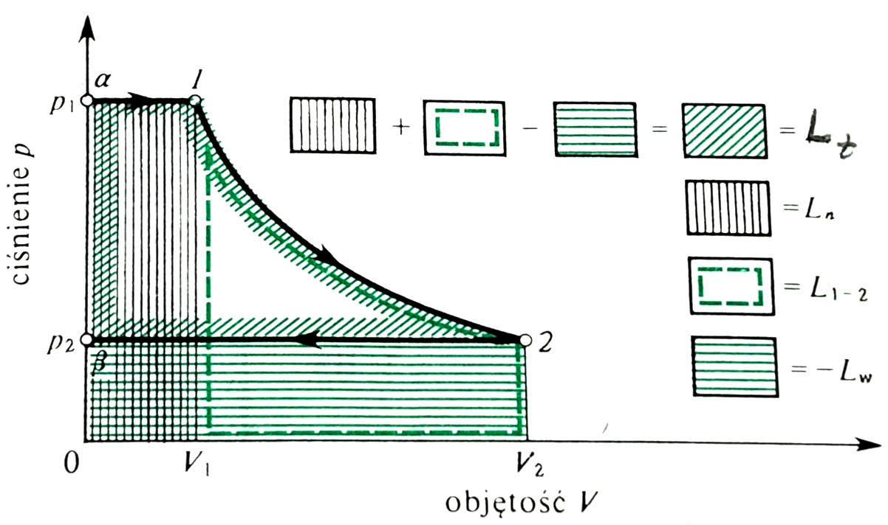
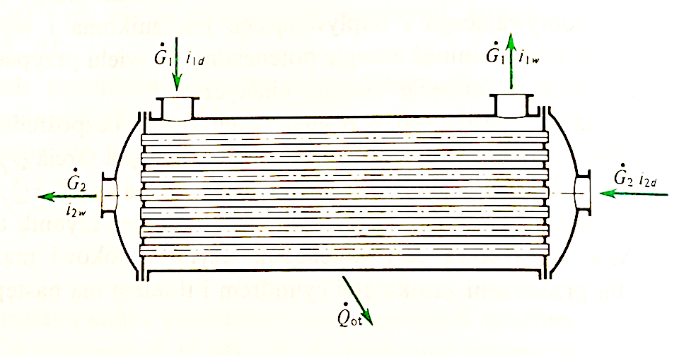

W3: I Zasada Termodynamiki - cz. II
Bilans Energii w Układach Otwartych
Wydział Inżynierii Środowiska i Inżynierii Mechanicznej


Pojęcie Pracy Technicznej

Źródło: J. Szargut, \(Termodynamika \ techniczna\) PWN, (2000).
- Sprężanie (\(dp > 0\)): praca jest wykonywana nad układem (\(đL < 0\)).
- Rozprężanie (\(dp < 0\)): praca jest wykonywana przez układ (\(đL > 0\)).
- Nadal nie uwzględniamy tu tarcia
\[L_t = L_{1-2} + L_n + L_w = L_{1-2} + p_1 V_1 - p_2 V_2\]
\[đL_t = -V dp\] \[L_t = -\int_{p_1}^{p_2} V(p) dp\]
Definicja
W układzie \(p-V\), pracę techniczną przedstawia pole pomiędzy krzywą przemiany a osią rzędnych (\(p\)).
Układy Otwarte
Kontrola Przepływu Materii
W układach otwartych (np. turbina, sprężarka) przez granice układu (osłonę bilansową) przepływa czynnik roboczy.
- Należy uwzględnić pracę tłoczenia (wprowadzenia i wyprowadzenia czynnika).
- Bilans energii musi uwzględniać strumienie entalpii wchodzące i wychodzące.

Źródło: J. Szargut, \(Termodynamika \ techniczna\) PWN, (2000).
Równanie Przepływu Ustalonego
Postać Ogólna Bilansu Mocy
Dla maszyny działającej w sposób ustalony (strumień masy \(\dot{m} = const\)):
\[ \underbrace{\dot{Q} + \dot{W}_{tech}}_{\substack{\text{Moc wymienna} \\ \text{z otoczeniem}}} = \dot{m} \left[ \underbrace{(h_2 - h_1)}_{\Delta \text{Entalpii}} + \underbrace{\frac{w_2^2 - w_1^2}{2}}_{\substack{\Delta \text{En. Kinetycznej} \\ (\text{tu } w \text{ to prędkość!})}} + \underbrace{g(z_2 - z_1)}_{\Delta \text{En. Potencjalnej}} \right] \]
Gdzie:
- \(\dot{Q}\) – strumień ciepła (moc cieplna) [W].
- \(\dot{W}_{tech}\) – moc techniczna (na wale) [W].
- \(\dot{m}\) – Strumień masy czynnika [kg/s]
- \(h\) – entalpia właściwa [J/kg].
- \(w\) – prędkość przepływu [J/kg].
- \(g \Delta z\) – energia potencjalna [J/kg].
- \(z\) – wysokość [m]
Zastosowanie: Turbina
Ekspansja Czynnika
W turbinach (parowych lub gazowych) czynnik rozpręża się, wykonując pracę techniczną.
- Zazwyczaj proces jest adiabatyczny (\(\dot{Q} \approx 0\)).
- Zmiany energii kinetycznej i potencjalnej są często pomijalne.
Uproszczony bilans: \[ P_i = \dot{m} (h_1 - h_2) \] Gdzie \(P_i\) to moc wewnętrzna turbiny.
Zastosowanie: Sprężarka i Pompa
Kompresja Czynnika
Urządzenia te wymagają dostarczenia pracy z zewnątrz, aby podnieść ciśnienie czynnika.
- Moc napędowa sprężarki \(N < 0\) (według konwencji inżynierskiej).
- W pompach (ciecz nieściśliwa) praca techniczna wynosi: \(l_t = v \Delta p\).
Bilans dla sprężarki: \[ P_d = \dot{m} (h_2 - h_1) - \dot{Q} \]
Zastosowanie: Wymiennik Ciepła
Przepływ Izobaryczny
W wymiennikach (np. chłodnica, nagrzewnica) nie wykonuje się pracy technicznej (\(L_{tech} = 0\)).
Bilans dla jednego czynnika: \[ \dot{Q} = \dot{m} (h_2 - h_1) \]
Dla wymiennika dwupłynowego (adiabatycznego z zewnątrz): \[ \dot{m}_A \Delta h_A = -\dot{m}_B \Delta h_B \]
Zastosowanie: Dławienie
Proces Izentalpowy
Dławienie zachodzi podczas przepływu przez zawór lub zwężkę bez wymiany ciepła i pracy.
\[ h_1 = h_2 \]
- Dla gazu doskonałego temperatura nie ulega zmianie.
- Dla gazów rzeczywistych występuje efekt Joule’a-Thomsona (zmiana temperatury).
Zasada Ekwipartycji Energii
Teoria Ciepła Właściwego
Każdy stopień swobody cząsteczki wnosi wkład do energii wewnętrznej [22].
Średnia energia na jeden stopień swobody: \[ \langle E_i \rangle = \frac{1}{2} k T \]
- Ruch postępowy: 3 stopnie (\(3 \cdot \frac{1}{2} kT\)).
- Ruch obrotowy: +2 stopnie (cząsteczki liniowe) lub +3 stopnie (nieliniowe).
- Drgania (oscylacje): Wnoszą wkład energii kinetycznej i potencjalnej.
Ciepło Właściwe Gazów
Wartości Teoretyczne \(c_v\)
Wartość molowego ciepła właściwego zależy od liczby stopni swobody (\(f\)):
\[ (Mc_v) = \frac{f}{2} (MR) \]
| Typ Gazu | \(f\) | \((Mc_v)\) | Przykład |
|---|---|---|---|
| Jednoatomowy | 3 | \(1.5 R\) | Ar, He |
| Dwuatomowy | 5 | \(2.5 R\) | \(N_2, O_2\) |
| Wieloatomowy | 6 | \(3.0 R\) | \(H_2O, CH_4\) |
Wartości te zmieniają się z temperaturą z powodu efektów kwantowych („włączanie” stopni swobody).
I Zasada w Procesach Spalania
Energia Chemiczna
W procesach spalania energia chemiczna paliwa jest uwalniana jako ciepło.
Wartość opałowa (\(Q_i\)): Ciepło wydzielone przy zupełnym spaleniu jednostki paliwa, gdy woda w spalinach pozostaje w postaci pary.
Bilans energetyczny komory spalania: \[ \dot{H}_{substratów} + \dot{m}_{pal} \cdot Q_i = \dot{H}_{spalin} + \dot{Q}_{strat} \]
Zjawisko Joule’a-Thomsona
Dławienie Adiabatyczne
Współczynnik \(\mu\) określa zmianę temperatury przy spadku ciśnienia w procesie izentalpowym:
\[ \mu = \left(\frac{\partial T}{\partial p}\right)_H \]
- \(\mu > 0\): Gaz ochładza się przy dławieniu (większość gazów w temp. pokojowej).
- \(\mu < 0\): Gaz ogrzewa się (np. wodór, hel w temp. pokojowej).
- Krzywa inwersji: Linia, na której \(\mu = 0\).
Analiza Egzergetyczna (Wstęp)
Energia Dostępna
Egzergia to maksymalna praca, jaką układ może wykonać przechodząc do stanu równowagi z otoczeniem.
- I Zasada mówi o ilości energii (konserwacja).
- II Zasada mówi o jakości energii (degradacja).
- Strata egzergii (\(\delta B\)): Jest proporcjonalna do przyrostu entropii (Prawo Gouya-Stodoli).
Podsumowanie W2 i 3
Kluczowe Wnioski
- Energia wewnętrzna i entalpia to kluczowe funkcje stanu do bilansowania energii.
- I Zasada dla układów zamkniętych: \(Q + W = \Delta U\).
- I Zasada dla układów otwartych: Równanie stałego przepływu oparte na entalpii.
- Praca techniczna występuje w maszynach przepływowych.
- Ciepła właściwe zależą od budowy cząsteczki i temperatury.
Przejście do W4
Właściwości Substancji Czystych
W następnym module nauczymy się, jak wyznaczać parametry dla substancji zmieniających fazę:
- Korzystanie z tablic pary wodnej.
- Praca z wykresami h-s (Molliera) oraz p-h.
- Obliczanie stopnia suchości pary mokrej (\(x\)).
Termodynamika Techniczna